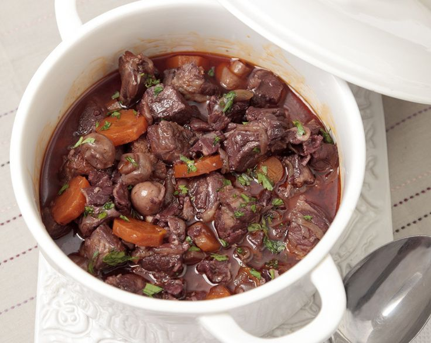

Lamb Bourguignon

Description
A rich lamb stew that will not only taste great, but also make your diners exclaim "Ooh, fancy!" when they hear what's for dinner.
Ingredients
- 1 pound lean boneless leg of lamb
- 2 tablespoons olive oil
- 1 cup frozen pearl onions, thawed
- 2 cloves garlic, minced
- 1 cup canned beef broth
- 1/2 cup dry red wine
- 1/4 cup strongly brewed coffee (at room temperature)
- 1 and 1/2 tablespoons all-purpose flour
- 1 tablespoon tomato paste
- 1/4 teaspoon salt
- 1/2 teaspoon pepper
Steps
- Trim fat from lamb.
- Place lamb between two sheets of heavy-duty plastic wrap, and flatten to 1/2-inch thickness using a meat mallet or rolling pin.
- Cut flattened lamb into 1-inch pieces
- Cook lamb in hot olive oil in a large skillet over medium-high heat 6 minutes or until browned on all sides.
- Remove meat from skillet; set aside.
- Add onions to skillet; cook for 2 minutes or until lightly browned and tender, stirring often.
- Add garlic, and cook for 30 seconds, stirring often.
- Remove onion mixture from skillet, and set aside.
- Pour beef broth and wine into skillet; bring to a boil.
- Reduce heat, and simmer, uncovered, for 5 minutes.
- Combine coffee and remaining 4 ingredients, stirring until smooth.
- Pour mixture into skillet and cook, stirring constantly, until sauce is thickened.
- Add lamb and onion mixture.
- Let simmer for 10 minutes, stirring occasionally.